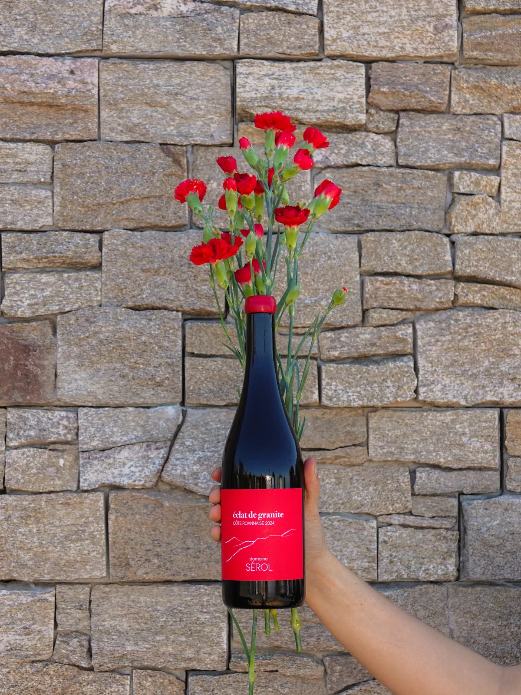

Côte Roannaise
Serol
Cap sur les coteaux granitiques de la Côte Roannaise.
Niché sur les coteaux granitiques de la Côte Roannaise, le domaine Serol est devenu une référence incontournable de cette appellation ligérienne.
Les vins du domaine séduisent par leur fraîcheur et leur énergie. Fruits rouges croquants, notes florales et épicées, belle minéralité : chaque cuvée exprime avec sincérité les sols granitiques dont elle est issue.
Le coup de cœur de Tanguy : Éclat de Granit, une merveille de gamay. Une superbe porte d'entrée pour découvrir le style du domaine.
Et toi, tu connaissais la Côte Roannaise ?

